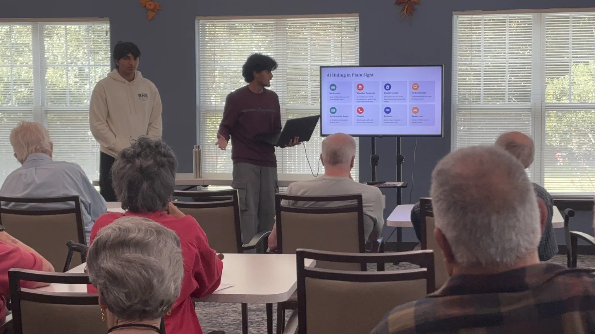
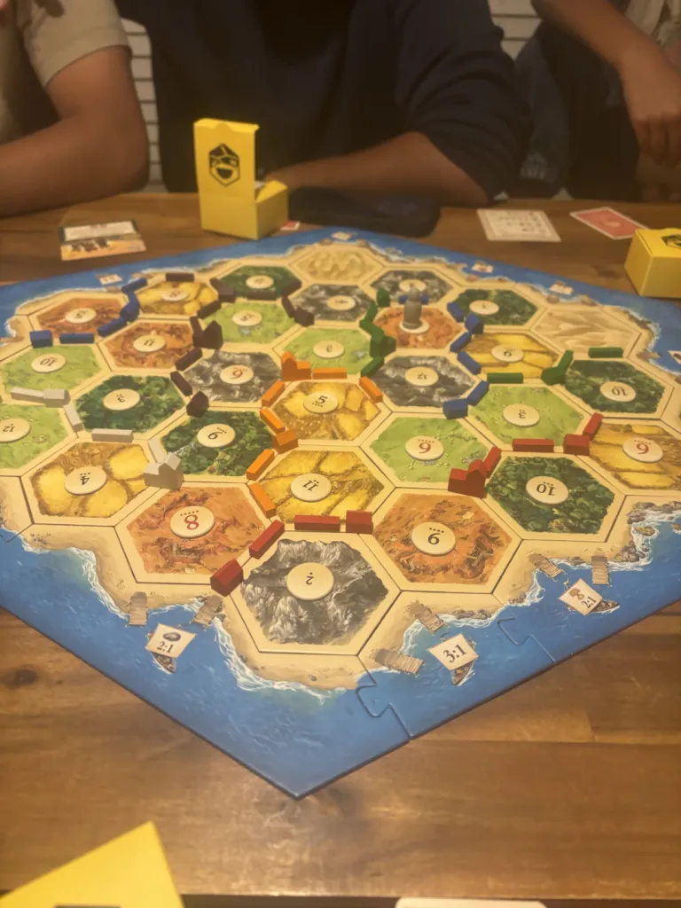

i code and work with machine learning. Right now i'm just getting into research and chaotic systems. Hopefully i'll be able to do some cooler stuff in the future.
maglab is super cool i've been learning some cool physics about superconductivity.
most recent paper shows how benchmark correctness is necessary but nowhere near sufficient -- basically benchmark results usually hide something in their results like a skewed methodology. Benchmarks can be validated with 5 steps: failure accounting, held-out generalization, matched disclosure, structural identifiability, and cross-system transfer.
i also teach a whole buncha people about ai and coding. better to just check out this article. i also teach my classmates programming and elementary kids about robotics. beeopity bop.
i dabble in tennis and i made myself an AI tennis coach because the ones near me were too expensive highkey. see below.


(first author) Correct Scores, Wrong Conclusions: Auditing Forecasting Benchmarks on Chaotic Dynamics
for tarangg i sped up the site by ~25%, added a verification system for custom tailoring requests, and a chatbot
i speak english, telugu, hindi, and latin
whole lotta fugazi :D